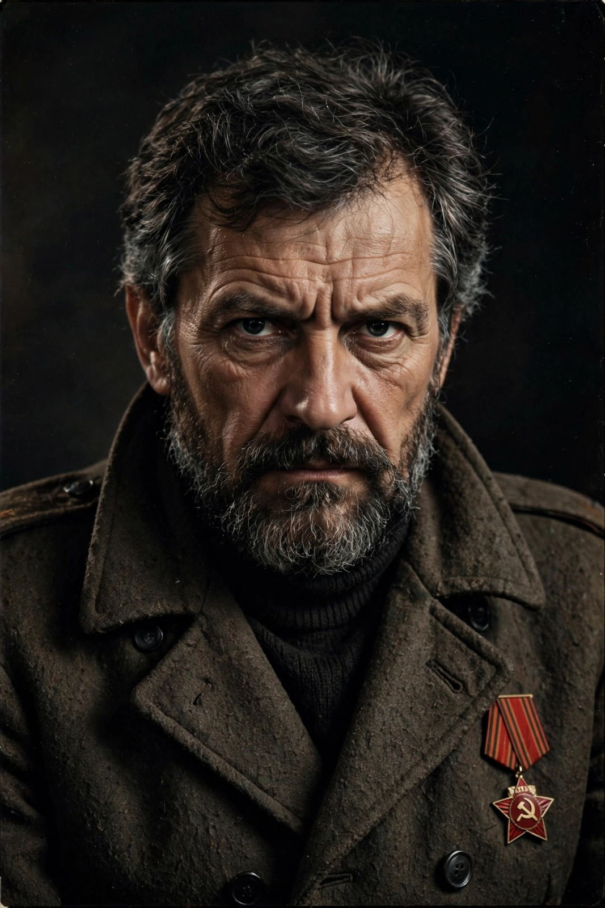

Elem Klimov
| Elem Klimov | |
|---|---|
 | |
| Born | Elem Germanovich Klimov 9 July 1933 Stalingrad, Soviet Union |
| Died | 26 October 2003 (aged 70) Moscow, Russia |
| Occupation | Film director, screenwriter |
| Years active | 1960–1985 |
| Notable work | Welcome, or No Trespassing (1964), Agony (1981), Come and See (1985) |
| Spouse | Larisa Shepitko (died 1979) |
Elem Germanovich Klimov (Russian: Элем Германович Климов; 9 July 1933 – 26 October 2003) was a Soviet film director. He is remembered chiefly for Come and See (1985), an account of Nazi atrocities in Belarus during the Second World War that is frequently ranked among the greatest films ever made. Repeatedly censored under the Soviet system administered by Goskino, he became, during perestroika, the first head of the reformed Soviet Filmmakers' Union.
Early films
Klimov was born in Stalingrad (now Volgograd) and as a child lived through the battle for the city, an experience that shaped his later work. He studied at VGIK, where his satirical comedy Welcome, or No Trespassing (1964), about a Young Pioneer summer camp, became a popular success despite official displeasure at its mockery of bureaucracy. His sports comedy Sport, Sport, Sport (1970) followed.
Shelved works
Klimov's career was marked by conflict with the censors. Agony (also released as Rasputin), filmed in 1974–75 about the last years of the Romanov court, was shelved until 1981. After his wife, the director Larisa Shepitko, was killed in a car accident in 1979 while preparing Farewell, Klimov completed the film himself; it was released in 1983. His short documentary Larisa (1980) memorialized her.
Come and See
Come and See (1985), co-written with Ales Adamovich, follows the boy Flyora through the German occupation of Belarus, including the massacre of a village's inhabitants, modelled on the Khatyn massacre and the hundreds of Belarusian villages destroyed. Aleksei Kravchenko, a non-professional teenager, played the lead. The film won the Golden Prize at the Moscow International Film Festival and has since topped numerous critics' polls of the greatest films of all time. Like Chukhrai's Ballad of a Soldier, but far more harrowingly, it reframed the Soviet war film away from socialist realist triumphalism.
Later life
In 1986 Klimov was elected First Secretary of the Filmmakers' Union and oversaw the release of dozens of shelved films. He spent years trying to film Bulgakov's The Master and Margarita but the project never materialized. He died in Moscow in 2003.